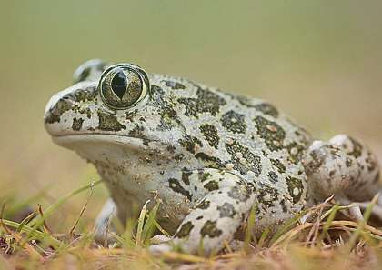
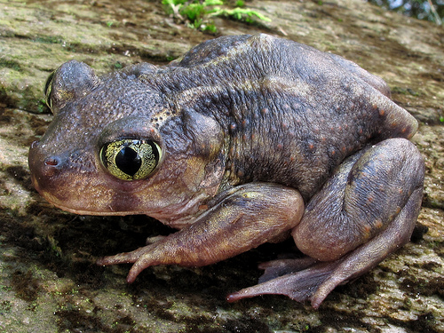
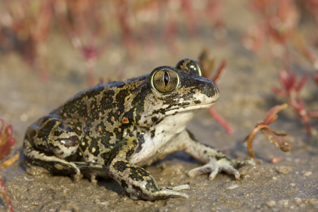

 Длина тела взрослых особей до 80 мм. Кожа гладкая, лоб между глазами плоский. Сверху крупные коричнево-зеленые пятна на сером или желтоватом фоне. Глаза очень крупные, выпуклые, золотистого цвета с вертикальным зрачком. Сочленовые метатарзальные бугорки – желтоватые.
В дельте р. Самур населяет песчаные дюны и осочково-злаково-полынные полупустыни. Ведет роющий образ жизни, выходя на поверхность в сумеречные и ночные часы для охоты. Размножается в небольших пресных водоемах весной при низких температурах воздуха и воды. Сеголетки покидают водоемы через 65-85 дней, достигая в длину 25-55 мм. Биология животных в Дагестане не изучена.
Накоплен положительный опыт длительного разведения в неволе (Московский зоопарк) и успешной интродукции в природу в условиях Армении. Необходимы реорганизация Самурского заказника в заповедник, включающего приморские песчаные и полупустынные биотопы, поиск возможных новых популяций в Дагестане, разработка целевой программы разведения в неволе и интродукции в подходящие биотопы Дагестана.